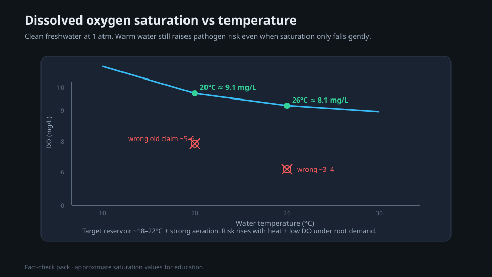

Testing and treatment of source water for cannabis
This paper shows the dissolved materials in tap water, well water and rainwater, before you add nutrients. It gives information about EC, alkalinity, carbonates, chlorine, chloramine and hardness. After you read this paper, you will know how to read a water report. You will also know how to find if the cost of reverse osmosis is correct for your water. You will know how to use the data about your source water when you calculate the nutrients.
Purpose and scope
Each feed that you give to a cannabis plant starts with water, and this water almost always has other materials in it. Tap water, well water and rainwater all contain dissolved minerals, gases and chemical materials from the treatment. These materials change the pH and use part of the EC that is available for your nutrients. They can also cause damage to the roots or to beneficial microbes, before you add fertilizer.
The plant does not use only your nutrients. It uses the water, the minerals and the nutrients together. Thus two growers who use the same feed chart can get opposite results, only because their source water is different. You cannot control a value that you do not measure. Do a water test before each decision about nutrients.
This paper shows a new grower how to find the materials in the source water. It also shows how to do a test of the water, and how to find if the cost of reverse osmosis is correct. You can use this paper with the pH management and nutrient mixing papers.
Definitions
The facts about water quality are easy to know, but the terms are not easy. When you know these terms, the remaining sections of this paper are easy to read. One fact is very important: alkalinity is not the same as pH.
Evidence and limitations
We want each paper to be correct. Thus we examine each paper for information that is not solid. This information comes from the view of one grower, from a small number of sources, or from grower methods that have no controlled test. We identify this information, and we do not show it as solid.
Frequently there is no paper for the decision that you must make. Then we use the reports of other growers and the methods that work in the rooms that we know. This information can help you, but it is not the result of a laboratory test. Use the methods that work for your plants, for your room and for your meters. If a table does not agree with your crop, use the data from your crop and record the difference.
- Alkalinity is not the same as hardness. For removal methods, chloramine is not the same as free chlorine.
- The saturation of dissolved oxygen (DO) decreases gradually when the temperature increases. Warm systems with a low O₂ content increase the risk of root disease.
- Threshold values for the decision to use RO, and a procedure to calculate the EC of the source water (mS/cm) in the feed.
- One feed maximum of 800 to 900 ppm for all ppm scales and all stages.
- Threshold values of chlorine damage from lettuce as mandatory limits for cannabis.
If you find an error, make a report. We will correct it. Make the report on GitHub, with the name of the paper and the information that is incorrect. If you have a source, include it: Make a report of an accuracy problem. The regulations, labels and licenses of your area always override each procedure in these papers. The label weak in a paper shows the points where the risk of an error is highest.
Water source types
A supplier applies a treatment to tap water, and the quality of the water is stable. But the water contains chlorine or chloramine. It frequently has a moderate or high content of minerals. The content can be 150 to 300 ppm or more directly from the tap.[3] Well water can have a very high hardness, and it can have a high content of iron, manganese or sulfur. It changes with the seasons, thus you must do a test of the water.
Rainwater has a low content of dissolved minerals. But it has a low buffering capacity, and it can collect contaminants from the roof and from the storage.
The start EC gives part of the EC of the completed feed. But a display of 300 ppm TDS does not show the ion balance or the alkalinity of the water. It also does not show that you cannot use the water. Measure the source EC, the alkalinity, the sodium, the chloride, the calcium and the magnesium. Then include the nutrients in the water that the plant can use as part of the feed. The Bevan test gives the ranges for the effect of NPK on each crop, and not a limit for source water.[1][3]
Rainwater usually has only 0 to 20 ppm, which is near the value of RO water. But it has a low buffering capacity or no buffering capacity. There is also a risk of pathogens, contaminants from the roof, or sodium near the coast.
- Tap water: its quality is stable and it is easy to use, but it contains chlorine or chloramine. The start EC uses part of the EC that is available for your nutrients.
- Well water: there is no cost for the water and no meter, but the minerals in the water change much. Do a test of the water a minimum of two times each year, and after a large quantity of rain.
- Rainwater: the start PPM is low, the same as RO, but the buffering is low. Filter the water and monitor the sodium and the contaminants.

Alkalinity and carbonate buffering
Alkalinity is a parameter of the water. New growers frequently have incorrect information about it. Dissolved carbonates and bicarbonates cause alkalinity. Alkalinity makes the pH of the root zone increase again, also after you decrease the pH of the tank to 5.8. For cannabis in containers, a usual satisfactory range is approximately 40 to 100 ppm CaCO3, and many growers use 30 to 60 ppm as the best target.[4] Use these conversions: 1 meq/L is equal to 50 ppm CaCO3 and to 61 ppm bicarbonate.[3]
If the alkalinity is more than approximately 100 to 150 ppm CaCO3, it continuously increases the pH of the substrate. It also causes lockout of iron, manganese and other micronutrients.[3] To correct a high alkalinity, add acid to neutralize the carbonates. Examples of acid are phosphoric acid, nitric acid and citric acid. Do not add acid only to get a correct pH reading one time.
If the alkalinity is very low (RO water, rainwater), there is almost no buffer. Thus the pH changes quickly, and small errors in the quantity of acid or base have more effect.
Chlorine, chloramine and hardness
Suppliers of tap water disinfect the water with chlorine or with chloramine, which is more stable. Chlorine and chloramine can cause damage to the root tips and to beneficial microbes. A report shows damage to the root tips at a chlorine concentration of only 0.4 ppm.[5] This damage is most important for growers who use living soil or other systems with microbes.
Chlorine moves out of the water as a gas if you keep the water in a container with aeration for approximately 24 hours. Chloramine does not move out of the water as a gas. To remove chloramine, you must use a catalytic carbon filter or RO.[6]
| Stays in water in a container | Aeration for 24h removes it | Carbon removes it | RO removes it | |
|---|---|---|---|---|
| Chlorine | No | Yes | Yes | Yes |
| Chloramine | Yes | No | Catalytic carbon only | Yes |
Hardness is the only part of your source water that helps the plant. Hardness is the quantity of calcium and magnesium in solution, and cannabis must have these two minerals.[2] But in hard water, these minerals usually occur with a high alkalinity. Thus the Ca and Mg that help the plant are in the water with the carbonates that cause problems with the pH. Soft water, with less than 17 mg/L (1 GPG), can have a low quantity of Ca and Mg. A CalMag supplement can be necessary, with or without RO.
| Type | Hardness | Information for cannabis |
|---|---|---|
| Soft water | Less than 17 mg/L (less than 1 GPG) | The Ca and Mg can be low. Add CalMag. |
| Slightly hard water | 17 to 60 mg/L (1 to 3.5 GPG) | Usually correct. Measure the alkalinity. |
| Moderately hard water | 60 to 120 mg/L (3.5 to 7 GPG) | Monitor the alkalinity, because it can increase. |
| Hard water | 120 to 180 mg/L (7 to 10.5 GPG) | The Ca and Mg help the plant, but it is possible that the alkalinity is high. |
| Very hard water | More than 180 mg/L (more than 10.5 GPG) | Lockout and pH problems occur frequently. Find if RO is necessary. |
Reverse osmosis and the minerals that you add
Reverse osmosis removes the minerals from water. The water then has almost zero PPM, usually 0 to 10 ppm TDS. Thus each mineral that the plant gets is a mineral that you select.[3]
RO also removes calcium and magnesium. Thus you must do the build back. In the build back, you add minerals to the water again. For the build back, you usually add a CalMag supplement and your base nutrients. The target is approximately 100 to 200 ppm, with sufficient Ca and Mg before the other nutrients of the feed.[2]
- Use RO if: the start EC, the sodium or the alkalinity is high, or chloramine is in the water.
- RO is frequently not necessary if: the tap water has a low hardness and a low alkalinity, and it has less than approximately 150 ppm. The water has only chlorine, which moves out of the water as a gas.
- The cost: the ratio of waste water is frequently 1 to 4 gallons for each gallon of RO water that you make. You must also replace the membrane, and the fill rate is lower.
Source-water testing
Before you get equipment, get correct data for your water. A low-cost EC/PPM pen and a pH pen give the start strength and the acidity quickly. But they do not show the alkalinity, the sodium, or the quantity of each mineral. For this, send a sample to a lab, or read the water report from the supplier of your tap water. The report has a list of EC/TDS, pH, alkalinity, calcium, magnesium, sodium, chloride, and information on chlorine or chloramine.
- 1Get and calibrate pensFirst, get an EC/PPM pen and a pH pen. Calibrate the pens with new calibration solution. Do not use tap water for the calibration.
- 2Get all the dataFor alkalinity, sodium, Ca, Mg and micronutrients, use a lab test or the water report of your supplier each year.
- 3Record the start ECRecord the part of your target EC that the source water uses. Thus you know the headroom for the nutrients. Set the targets in mS/cm and not in ppm.
- 4Mix in the correct sequenceFill the tank with water. Let the chlorine move out of the water as a gas, or filter the water. If you use RO water or soft water, add CalMag. Add the base nutrients. Then adjust the pH last.
- 5Do a test again in each seasonDo a test of well water and rainwater again during the year. A supplier of tap water can also change the disinfectant from chlorine to chloramine from time to time.
Water temperature and frequent errors
The temperature of the water controls the dissolved oxygen and the risk of disease. We recommend that you keep the water at approximately 18 to 22 °C (65 to 72 °F). In this range, the saturation dissolved oxygen decreases only slowly, from approximately 9 mg/L at 20 °C to approximately 8 mg/L at 26 °C.[8] But warm water with low aeration also increases the risk of pathogens. Root pathogens, for example Pythium, increase in number more quickly at more than approximately 23 °C.[7] Warm water with low oxygen can cause root rot.
| Frequent error | Result and correction |
|---|---|
| You compare PPM readings from different meters | A 500 scale and a 700 scale give different readings from two pens on the same water. Select one scale and use only this scale. |
| You adjust the pH of the tank, but you do not control the alkalinity | The pH of the root zone increases again in days. Correct the alkalinity, and do not correct only one reading. |
| You apply only RO water or rainwater as feed | Deficiency of calcium and magnesium. Add CalMag before the base nutrients. |
| You keep water with chloramine in a container to remove the chloramine | Chloramine is stable and stays in the water after one night. Use catalytic carbon or RO. |
| The water is too warm | Low oxygen and root rot. Decrease the temperature of the reservoir to 18 to 22 °C (65 to 72 °F). |
Expected results and limitations
If you correct your water, a large group of problems that are not easy to find does not occur. The pH is stable, there is no damage from chlorine, and you can calculate the strength of the feed. Correct water cannot correct genetics of low quality, not sufficient light, or an incorrect feed schedule. Good water quality gives a good start for the crop, but it does not increase the yield directly. It prevents problems more than it increases the results.
- Most growers who have clean, soft tap water with low alkalinity can get good results. They only remove the chlorine and control the pH. For them, RO is not necessary.
- RO is most important for sources with very hard water, high sodium or high alkalinity, for chloramine, and for precision hydroponics.
- You must also control the pH, the EC, the temperature and the CalMag for each source of water that you select.
First, do a water test. Use the numbers to find if the cost of RO is correct. Do not use marketing to make this decision. Then use your clean source water with the pH management and nutrient mixing papers to make the remaining parts of the feed.
References
- Bevan, L., Jones, M., & Zheng, Y. (2021). Optimisation of Nitrogen, Phosphorus, and Potassium for Soilless Production of Cannabis sativa in the Flowering Stage Using Response Surface Analysis. Frontiers in Plant Science, 12, 764103. https://doi.org/10.3389/fpls.2021.764103
- Kpai, P., et al. (2024). Mineral nutrition for Cannabis sativa in the vegetative stage using response surface analysis. Frontiers in Plant Science, 15, 1501484. https://doi.org/10.3389/fpls.2024.1501484
- University of Massachusetts Amherst, Center for Agriculture, Food, and the Environment (Greenhouse & Floriculture Program). Water quality: pH and alkalinity (fact sheet). UMass Extension. (source not from a journal, for example from a manufacturer) https://www.umass.edu/agriculture-food-environment/greenhouse-floriculture/fact-sheets/water-quality-ph-alkalinity
- Fisher, P., et al. (Purdue University Extension). HO-242-W: Alkalinity Management in Soilless Substrates. Purdue Extension. (source not from a journal, for example from a manufacturer) https://www.extension.purdue.edu/extmedia/ho/ho-242-w.pdf
- Ferrarezi, R. S., et al. (2023). Irrigation Sources with Chlorine Drinking Water Standard Limits Cause Phytotoxicity on 'Rex' Lettuce Grown in Hydroponic Systems. HortTechnology, 33(1), 125-130. https://doi.org/10.21273/HORTTECH05091-22
- Date, S., Terabayashi, S., Kobayashi, Y., & Fujime, Y. (2005). Effects of chloramines concentration in nutrient solution and exposure time on plant growth in hydroponically cultured lettuce. Scientia Horticulturae, 103(3), 257-265. https://doi.org/10.1016/j.scienta.2004.06.005
- Sutton, J. C., Sopher, C. R., Owen-Going, T. N., Liu, W., Grodzinski, B., Hall, J. C., & Benchimol, R. L. (2006). Etiology and epidemiology of Pythium root rot in hydroponic crops: current knowledge and perspectives. Summa Phytopathologica, 32(4), 307-321. https://doi.org/10.1590/S0100-54052006000400001
- FAO. Dissolved Oxygen (Section 4). In: Water Quality for Aquaculture / Inland Water Resources and Aquaculture Service. Food and Agriculture Organization of the United Nations. (source not from a journal, for example from a manufacturer) https://www.fao.org/4/ac183e/ac183e04.htm
Each citation in the paper, for example [1], refers to an item in this list. Each item is a primary source or an instruction from an authority, unless the item shows a different type. The results of cannabis tissue culture change much with the genotype. Before you use the dilutions, hormone doses and local regulations, make sure that they agree with the primary sources.